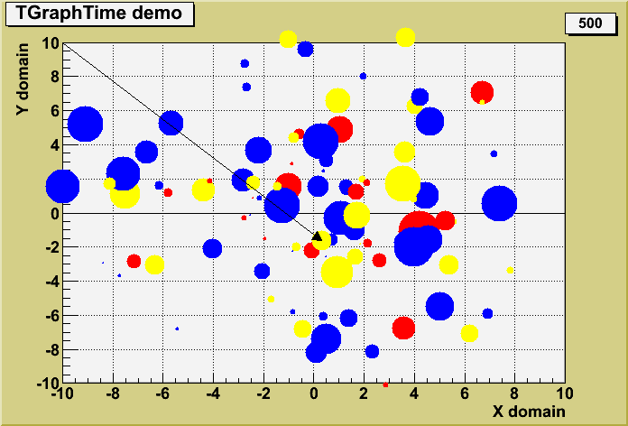
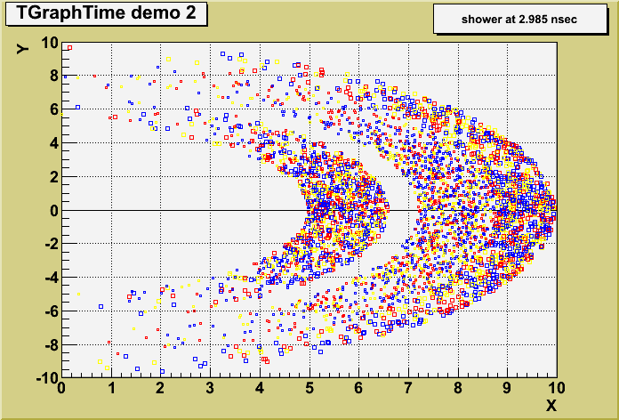
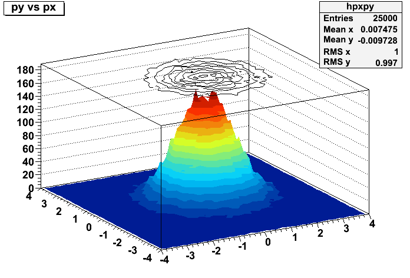
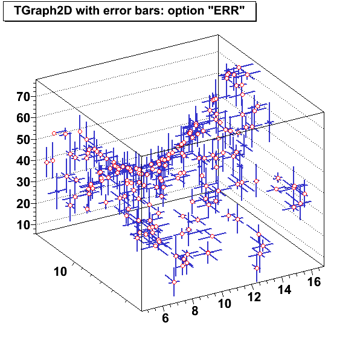

The tutorial gtime.C shows the evolution of a set of points with time and it produces the following picture.

The tutorial gtime2.C is an example of TGraphTime showing how the class could be used to visualize a set of particles with their time stamp in a MonteCarlo program. It produces the following picture.

{
TH1F *hgaus1 = new TH1F("Hgaus1", "", 100, -10, 10);
TH1F *hgaus2 = new TH1F("Hgaus2", "", 100, -20, 20);
THStack *hst = new THStack();
hgaus1->FillRandom("gaus", 30000); hst->Add(hgaus1, "ep");
hgaus2->FillRandom("gaus", 30000); hst->Add(hgaus2, "ep");
hst->Draw("nostack");
hst->GetHistogram()->SetLabelSize(0.07, "xy");
}
{
TH1D *h1 = new TH1D("h1","h1",10,0,10);
TH1D *h2 = new TH1D("h2","h2",10,0,10);
THStack h;
h1->SetLineColor(kRed);
h1->SetMarkerStyle(20),
h2->SetLineColor(kBlue);
h2->SetMarkerStyle(21);
for(int i=0; i<11; i++){
h1->SetBinContent(i,1.5-i/10);
h1->SetBinError(i,0.5*i);
h2->SetBinContent(i,10.5-i/10);
h2->SetBinError(i,0.7*i);
}
h.Add(h1);
h.Add(h2);
h.Draw("nostack E1");
}
Int_t x[5] = {0,1,2,3,4};
Int_t y[5] = {10,1,2,3,0};
Int_t n = 5;
TGraph *gr = new TGraph(n,x,y);
gr->Draw("AB*");
This problem was submited here: https://savannah.cern.ch/bugs/index.php?53949
{
TH1F *hgaus1 = new TH1F("Hgaus1", "", 100, -10, 10);
TH1F *hgaus2 = new TH1F("Hgaus2", "", 100, -20, 20);
THStack *hst = new THStack();
hgaus1->FillRandom("gaus", 30000); hst->Add(hgaus1, "ep");
hgaus2->FillRandom("gaus", 30000); hst->Add(hgaus2, "ep");
hst->Draw("nostack");
hst->GetHistogram()->SetLabelSize(0.07, "xy");
}


TFitResult r = h->Fit("myFunc","S");
TMatrixDSym cov = r->GetCovarianceMatrix(); // to access the covariance matrix
Double_t chi2 = r->Chi2(); // to retrieve the fit chi2
Double_t par0 = r->Value(0); // retrieve the value for the parameter 0
Double_t err0 = r->Error(0); // retrieve the error for the parameter 0
r->Print("V"); // print full information of fit including covariance matrix
r->Write(); // store the result in a file